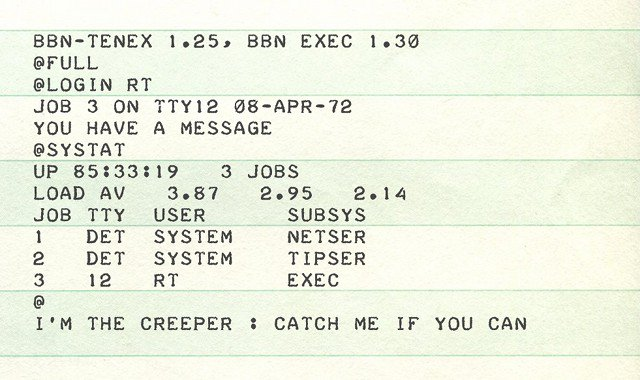
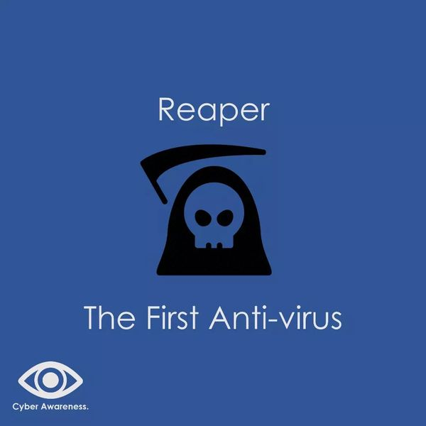

O Primeiro Vírus de Computador
Em 1971, o programador Bob Thomas desenvolveu o Creeper, o primeiro vírus de computador. Diferente dos vírus atuais, ele não tinha intenções maliciosas, sendo apenas um experimento para testar a replicação de um programa. Quando ativado, o Creeper exibia a mensagem: “I'm the creeper: catch me if you can!” (Eu sou o Creeper, pegue-me se for capaz). Abaixo, você pode conferir a imagem que mostra essa mensagem histórica.
Depois do Creeper, outro programa foi criado para combater esse “vírus” experimental. Chamado Reaper, ele foi o primeiro “antivírus” da história, desenvolvido entre 1971 e 1972 para localizar e deletar o Creeper. O Reaper funcionava de forma muito semelhante ao próprio vírus, pois se replicava de um sistema para outro para eliminar seu “irmão”. Por esse motivo, nem todos aceitam que o Reaper possa ser realmente chamado de “primeiro antivírus”. Contudo, os primeiros softwares comerciais projetados para eliminar pragas digitais só seriam lançados mais de 15 anos depois, em 1987, quando várias pessoas começaram a trabalhar quase simultaneamente no desenvolvimento da tecnologia que seria diretamente ligada ao antivírus moderno.
A Evolução dos Vírus Maliciosos
O primeiro cavalo de Troia
ANIMAL foi o primeiro cavalo de Troia, desenvolvido por John Walker em 1975. Baseado em um popular jogo de adivinhação de animais, sua versão exigia o envio de fitas magnéticas. Para facilitar, Walker criou o PREVADE, que se instalava junto com o ANIMAL e copiava o programa para diretórios onde ainda não estava presente. Embora não fosse malicioso, ambos se enquadravam na definição de cavalo de Troia, pois o ANIMAL continha um programa oculto.
O vírus do setor de inicialização Brain
O Brain, o primeiro vírus para PC, começou a infectar disquetes de 5,2" em 1986. Conforme relatos da Securelist, foi um trabalho de dois irmãos, Basit e Amjad Farooq Alvi, que tinham uma loja de computadores no Paquistão. Cansados dos clientes que faziam cópias ilegais de seus programas de software, eles desenvolveram o Brain, que substituía o setor de inicialização de um disquete por um vírus. O vírus, que também foi o primeiro vírus stealth, continha uma mensagem oculta de direitos autorais, mas não corrompia nenhum dado.
O vírus LoveLetter
O surgimento de redes de banda larga no início do século XXI transformou a transmissão de malware, permitindo que ele se propagasse rapidamente por e-mail e sites. Isso levou ao desenvolvimento de malwares modernos, abrangendo vírus, worms e cavalos de Troia, coletivamente chamados de "malware". Uma das epidemias mais notáveis foi o LoveLetter, que surgiu em 4 de maio de 2000. Ao contrário dos vírus de macro, que eram documentos infectados, o LoveLetter se apresentava como um arquivo VBS. Com a linha de assunto "I Love You" e um anexo chamado "LOVE-LETTER-FOR-YOU-TXT.vbs", ele enganava os usuários a abrirem o arquivo, permitindo que o worm substituísse arquivos existentes e se espalhasse para os contatos de e-mail das vítimas, demonstrando sua eficácia.
O vírus Code Red
O worm Code Red não continha um arquivo e existia apenas na memória, sem tentar infectar arquivos do sistema. Ele explorava uma falha no Microsoft Internet Information Server, causando confusão ao manipular protocolos de comunicação e se propagando rapidamente em algumas horas. Posteriormente, as máquinas afetadas foram utilizadas para lançar ataques de negação de serviço distribuído (DDoS) contra o site da Casa Branca, o Whitehouse.gov.X
Heartbleed
Em 2014, o vírus Heartbleed emergiu, colocando em risco servidores na Internet. Diferente de vírus ou worms, o Heartbleed explorou uma vulnerabilidade no OpenSSL, uma biblioteca criptográfica de código aberto amplamente utilizada. O OpenSSL envia "heartbeats" para verificar a conexão segura, permitindo que os usuários solicitem dados. Se um usuário alegar enviar 64 KB, mas enviar apenas 1 byte, o servidor responderá com os últimos 64 KB de dados armazenados na RAM, que podem incluir informações sensíveis como nomes de usuários e senhas.
Sexta-Feira 13: O Vírus que Assustou o Mundo
O Sexta-Feira 13, também conhecido como Jerusalém, foi um vírus criado em 1987, projetado para se espalhar no dia 14 de maio de 1988, em comemoração ao 40º aniversário da criação do estado de Israel. Detectado pela primeira vez na Hebrew University of Jerusalem, o vírus se espalhava por disquetes, CD-ROMs e anexos de e-mail, já que a internet estava apenas começando. Uma vez ativado, o Sexta-Feira 13 infectava e deletava arquivos em uso, afetando programas com extensões como .com, .exe e .sys. Com apenas 419 bytes, ele não apenas eliminava arquivos, mas também tornava o sistema operacional MS-DOS mais lento, reduzindo a memória disponível. Esse vírus se encaixava na categoria das "bombas-relógio", ativando-se em todas as sextas-feiras 13 para repetir sua destruição. Apesar da limitada conectividade da época, o Sexta-Feira 13 causou estragos significativos, infectando milhares de computadores ao redor do mundo e ganhando atenção na mídia. Em 1989, o New York Times publicou uma matéria destacando seu potencial destrutivo e as preocupações de especialistas em segurança. Com a evolução das tecnologias, como o Windows e o aprimoramento de soluções de segurança, o Sexta-Feira 13 perdeu sua eficácia e se tornou um marco na história dos vírus. Hoje, é lembrado como uma curiosidade histórica e um aviso sobre a importância da segurança digital. Abaixo, você pode assistir a um vídeo do vírus em ação:
O futuro dos vírus de computador
Nos últimos 60 anos, os vírus de computador deixaram de ser meras brincadeiras digitais para se tornarem armas sofisticadas de um cenário cibernético cada vez mais perigoso. Worms, cavalos de Troia e outros vírus continuam a evoluir, desafiando os limites da segurança. O futuro do crime virtual permanece incerto, com ameaças cada vez mais difíceis de detectar, como o cavalo de Troia Moker. A única certeza é que, tanto para os atacantes quanto para os defensores, a adaptação será uma luta constante. Em um mundo digital em constante mudança, estar um passo à frente pode ser a diferença entre segurança e vulnerabilidade total.